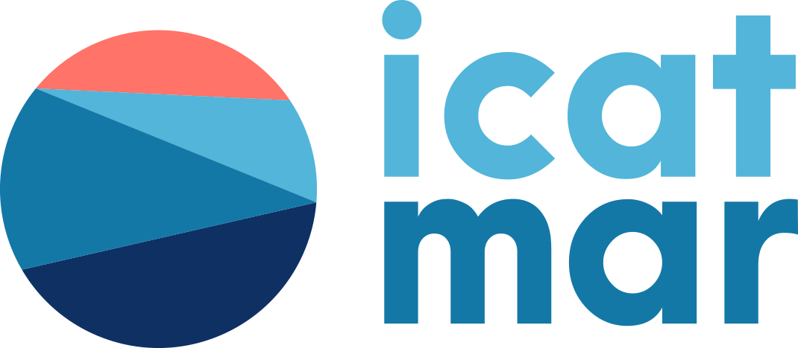

OPP Peix Blau Tarragona
Nom Barca:
Data i Hora Sortida:
Port de sortida:
Posició:
Obtenir posició
Hora:
Obtenir hora
PESCA
Especie:
----
Sardina
Seitó
Alatxa
Kg:
Calibre:
----
1 - Gran
2 - Mitjà
3 - Petit
NO PESCA
Motiu de no pesca:
----
Peix petit
No té interès econòmic
Prohibició de pesca
Peix no concentrat
Solta
Altres
INTERACCIÓ TONYINES
Kg:
Interacció:
----
Cap
Impedeix la maniobra de pesca
No permet que el peix es concentri
Destroces en l'art
Envia